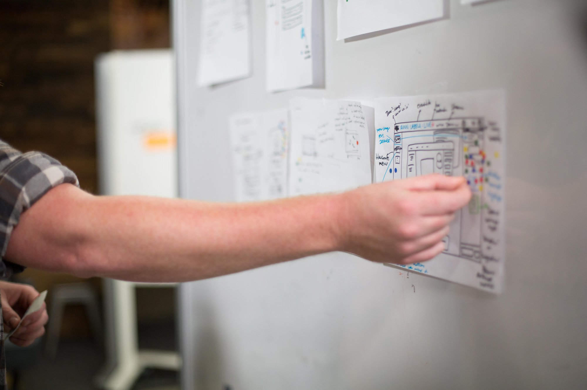

Is patient engagement low? Are users getting confused? Watch how users actually struggle with standard health app interfaces.
You'll soon learn the 5 UX mistakes that kill health apps before they launch and start designing with the brain in mind.
Hi, I'm Jean Kaluza. With over a decade of experience as a UX Researcher & Strategist for health & movement products. I specialize in the critical intersection of human-centered design and complex health/neuro-tech applications. I’ve helped shape products for Disney Parks & Resorts Technology, multi-disciplinary UX, fast-growing startups (including one acquired for $36 million), movement + habit-forming digital products, healthcare-related research, behavior change, and accessibility.
"She helped us improve our design process using this fancy thing called "science." Taking an evidence-based approach Jean helped us ensure we were creating happier customers with every improvement we made to the product."
— Gregg Pollack
🗣️ Let's talk! From pitch-ready UX checks to lightweight ongoing support, I'm at your service.
Schedule Your Free ConsultationChoose the engagement level that fits your startup stage.
Limited availability - Now accepting the next 10 clients for Q4 2025 - Q2 2026
$299
Designed for bootstrapped and pre‑revenue teams; spend once to stop the worst leaks before pilots.
Select Starter$999
Everything in Starter, plus:
For funded teams who need activation, retention, and pilot readiness to move now.
Select Standard$3,250
Everything in Standard plus:
For teams preparing for a major launch, payer/pharma pitch, or high‑stakes pilot.
Apply for Sprint
Product Shift is on a mission to improve UX in healthcare. All services rendered with your company's unique feasibility, budget, & goals in mind.
Send me your Test app build or Figma prototype. A low cost & it only takes 5 minutes to tell us about your app. We'll get back to you with our findings within 3 business days!
*Note: Not all apps qualify for the teardown. We will respond within 72 business hours to confirm eligibility and next steps to the email provided.